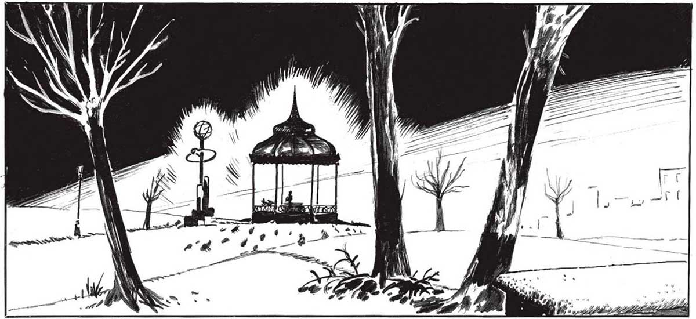
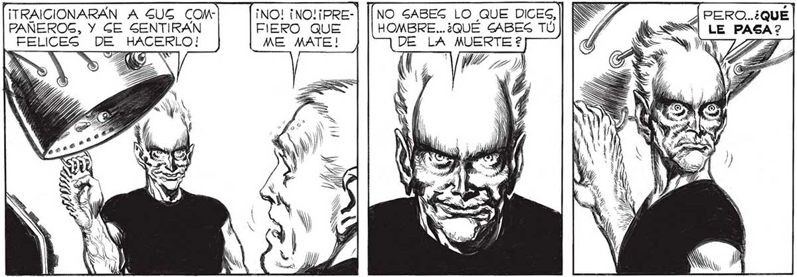
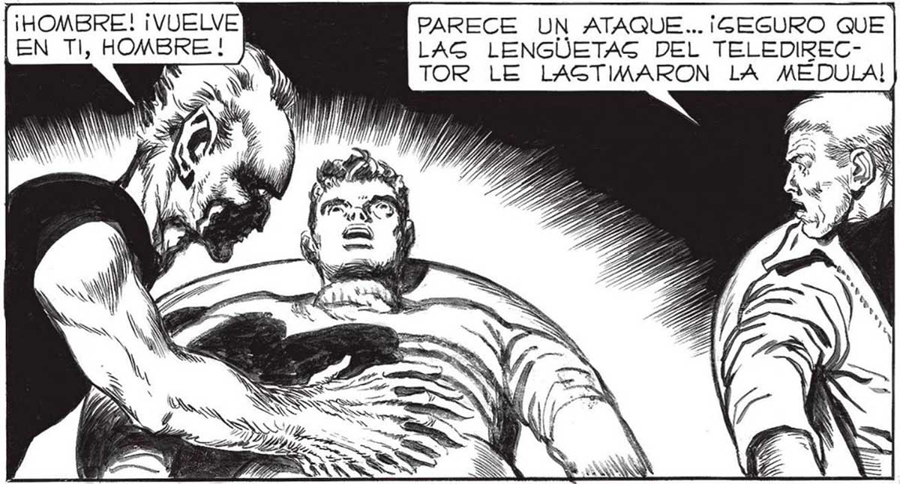

MUY PRONTO SERAN USTEDES COMO NOGOTROS, LOS “MANOG”".. LOGS RAYOG DE EGTE APARATO LES... CAMBIARA LA ESTRUCTURA CEREBRAL.. PENGARAÁN UGTEDEG COMO “MANOS” Y HARAN LO QUE LES CONVIENE A LOG MANOS”, ¡ITRAICIONARAN A 5US COM INO! ¡NON¡PRE-| [[NO SABES LO QUE DICES, | NS A PERO..¿QUÉ PAÑEROS, Y GE SENTIRAN FIERO QUE | || HOMBRE..¿QUÉ SABES TU ]| $ LE PASA? FELICES DE HACERLO! ME MATE! D NO ESTOY LOG HOMBREG SON SEGURO... GERES IMPREVIGIBLES.. VEREMOS HAS TA DONDE EG REAL SU DESMAYO... ¡HOMBRE! ¡VUELVE PARECE UN ATAQUE... ¡GEGURO QUE EN TI, HOMBRE! A LAS LENGUETAS DEL TELEDIRECDY Y TOR LE LAGTIMARON LA MEDULA! > — zm. Ta —> ES . va EJ OA 4 SIY Y YAA 163


